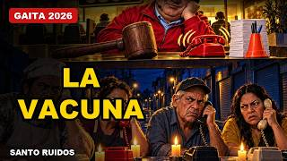

Canciones de protesta de Venezuela 2026
Si buscas canciones de protesta de Venezuela, aquí hay música de protesta nueva en el género que mejor la canta: la gaita zuliana. Son 28 canciones con letra completa y video, que dicen en voz alta lo que el pueblo comenta en la cola, en el apagón y en el grupo de la familia.
Hablan de la luz que se va, de los bolichicos, del enchufe, de los letreros de obras que nunca llegaron y de los presos. Sátira y verdad con furro, charrasca, cuatro y coro de pueblo. Dale play, cántalas y compártelas.
Por qué la protesta venezolana se canta en gaita
La gaita zuliana nació para cantar lo que el pueblo vive: la crítica con picardía forma parte de su tradición. Por eso la protesta suena natural en seis octavos, con coro, tambor y cuatro, y se aprende en una sola escucha.
Estas canciones no piden nada raro: piden que se oigan. Léelas con la letra delante, cántalas donde quieras y compártelas con quien también se cansó de la cola, del apagón y del cuento de siempre.
Música de protesta venezolana: qué encuentras y cómo usarla
No hace falta ser experto en música para entrar. Cada canción tiene su video y su letra completa debajo, así que puedes leer mientras suena, buscar la estrofa que más te pegó y mandársela a alguien que sepa de qué hablamos. Empieza por la primera que ves y deja que el coro haga el resto.
Si vives lejos, ponla en una llamada con la familia; si estás en casa, ponla en la cocina. Es música para cantar entre varios, no para escuchar callado. Y si una letra dice lo que tú no pudiste decir, compártela: así llega a más gente.
Cuándo suena mejor una canción de protesta
Una canción de protesta rinde más cuando nace de algo que todos reconocen: el bombillo que se apaga a mitad de cena, el bono que no alcanza, el precio que cambió desde la mañana. Ahí el coro se canta solo y la letra deja de ser un texto para convertirse en una queja compartida.
Elige la que mejor describa tu semana, léela despacio y cuéntale a alguien por qué la escogiste. Esa conversación vale tanto como la canción.
Qué hace que una canción de protesta se quede
Una canción de protesta que se queda dice una verdad que todos sienten en pocas palabras y la pone en un estribillo que cualquiera repite. Por eso la gaita funciona tan bien: se canta en grupo y se aprende a la primera.
Las nuestras hablan de lo que se vive en la calle: el sueldo que no alcanza, la luz que se va, el apagón que nos agarra a todos. Cántalas, compártelas y que la voz del pueblo se oiga.
Canciones de protesta Venezuela: 28 gaitas con letra y video
 La Puerta GiratoriaLetra y video · La Voz del Pueblo · 3:59
La Puerta GiratoriaLetra y video · La Voz del Pueblo · 3:59 Puro LetreroLetra y video · La Voz del Pueblo · 3:50
Puro LetreroLetra y video · La Voz del Pueblo · 3:50 El del MazoLetra y video · La Voz del Pueblo · 4:00
El del MazoLetra y video · La Voz del Pueblo · 4:00 Lo Que Sirve Es el EnchufeLetra y video · La Voz del Pueblo · 3:59
Lo Que Sirve Es el EnchufeLetra y video · La Voz del Pueblo · 3:59 Bolichico PremiadoLetra y video · La Voz del Pueblo · 4:29
Bolichico PremiadoLetra y video · La Voz del Pueblo · 4:29 Se Llevaron a Nicolás (Y Se Fue la Luz)Letra y video · La Voz del Pueblo · 3:59
Se Llevaron a Nicolás (Y Se Fue la Luz)Letra y video · La Voz del Pueblo · 3:59 Nos Dejaron la HojaLetra y video · La Voz del Pueblo · 3:59
Nos Dejaron la HojaLetra y video · La Voz del Pueblo · 3:59 Llegó Sin un KioscoLetra y video · La Voz del Pueblo · 3:59
Llegó Sin un KioscoLetra y video · La Voz del Pueblo · 3:59 Revolución BonitaLetra y video · La Voz del Pueblo · 4:01
Revolución BonitaLetra y video · La Voz del Pueblo · 4:01 Su Cara con Mi PlataLetra y video · La Voz del Pueblo · 3:59
Su Cara con Mi PlataLetra y video · La Voz del Pueblo · 3:59- Se Fue Nicolás (Y la Luz También)Letra y video · La Voz del Pueblo · 3:28
 Echando BromaLetra y video · La Voz del Pueblo · 3:59
Echando BromaLetra y video · La Voz del Pueblo · 3:59 La Ruleta de la LuzLetra y video · La Voz del Pueblo · 4:00
La Ruleta de la LuzLetra y video · La Voz del Pueblo · 4:00 El Aguinaldo de 15 CentavosLetra y video · La Voz del Pueblo · 3:59
El Aguinaldo de 15 CentavosLetra y video · La Voz del Pueblo · 3:59 El Reloj de DelcyLetra y video · La Voz del Pueblo · 3:59
El Reloj de DelcyLetra y video · La Voz del Pueblo · 3:59 Muy VerdeLetra y video · La Voz del Pueblo · 3:59
Muy VerdeLetra y video · La Voz del Pueblo · 3:59 La Cacerola es mi FurroLetra y video · La Voz del Pueblo · 3:59
La Cacerola es mi FurroLetra y video · La Voz del Pueblo · 3:59 22 TrimestresLetra y video · La Voz del Pueblo · 3:59
22 TrimestresLetra y video · La Voz del Pueblo · 3:59 Sentado en el PetróleoLetra y video · La Voz del Pueblo · 3:59
Sentado en el PetróleoLetra y video · La Voz del Pueblo · 3:59 La Foto de DelcyLetra y video · La Voz del Pueblo · 3:59
La Foto de DelcyLetra y video · La Voz del Pueblo · 3:59 La misma oscuridadLetra y video · La Voz del Pueblo · 4:00
La misma oscuridadLetra y video · La Voz del Pueblo · 4:00 La Maleta al RevésLetra y video · La Voz del Pueblo · 3:59
La Maleta al RevésLetra y video · La Voz del Pueblo · 3:59 ¿Y la Plata Dónde Está?Letra y video · Vol. 2 · 3:18
¿Y la Plata Dónde Está?Letra y video · Vol. 2 · 3:18- Mansas PalomasLetra y video · Vol. 2 · 3:45
 A Limpiar PocetasLetra y video · Vol. 2 · 4:00
A Limpiar PocetasLetra y video · Vol. 2 · 4:00 Pasaporte VencidoLetra y video · Vol. 2 · 3:48
Pasaporte VencidoLetra y video · Vol. 2 · 3:48
La VacunaLetra y video · Vol. 2 · 3:50- Quinientos SeisLetra y video · Vol. 2 · 3:57